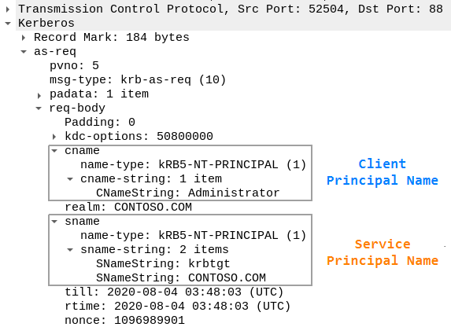

Kerberos Principals
In Kerberos
terminology, a user is called a principal. A principal can be a nominative person, an application user or a
service user.
A principal is divided into three parts: the primary, the instance, and the realm.
The
format of a typical Kerberos V5 principal is
primary/instance@REALM.
• The
primary is the first part of the principal. In the case of a user, it's the same as your
username. For a host, the primary is the word
host.
• The
instance(OPTIONAL) is a
string that qualifies the primary. The instance is separated from the primary by a slash (
/).
In
the case of a user(
Client), the instance is usually null, but a user might also
have an additional principal, with an instance called admin, which he/she uses to administrate a database.
•
The
realm is your Kerberos realm. In most cases, your Kerberos realm is your domain name, in
upper-case letters. For example, the machine
daniele.example.com would be in the realm
EXAMPLE.COM.
Examine Principals in KRB_AS_REQ
Client Principal Name is passed in cname field
Service Principal Name is passed in sname field
Principal Names are assigned
with an integer that identify the type. For more
https://tools.ietf.org/html/rfc4120#section-6.2Bibliography:
•
https://web.mit.edu/kerberos/krb5-1.5/krb5-1.5.4/doc/krb5-user/What-is-a-Kerberos-Principal_003f.html